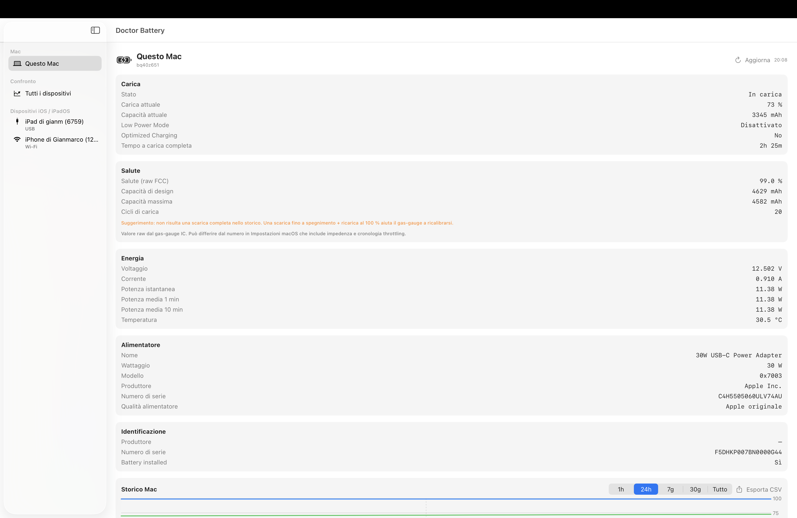
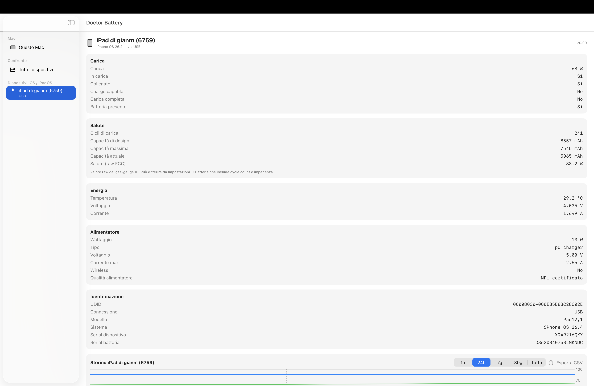
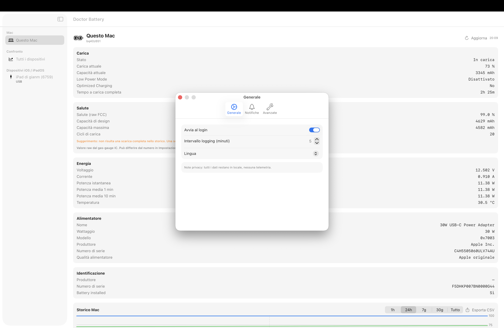

Open-source. No telemetry. All data stays on your Mac.



Reads the gas-gauge IC directly. Same numbers Apple's own diagnostics use, exposed transparently.
Linear-regression forecast tells you when health will hit 80% and how many cycles you have left.
Full battery details over USB or Wi-Fi via libimobiledevice. Cycle count, capacity, temperature, voltage.
Identifies Apple original vs MFi-certified vs generic chargers from the FamilyCode IORegistry value.
SQLite-backed history with overlapping charts across all your devices. Export to CSV.
Anomaly detection: alerts you if health drops faster than normal. Plus low battery, hot battery, calibration reminders.
Italian, English, French, German, Spanish out of the box. More languages welcome via PR.
No analytics, no network calls, no account.
Pre-built universal binary on GitHub Releases.
Latest releaseThe app is signed ad-hoc, so Gatekeeper warns on first launch. Right-click the .app → Open → confirm. macOS remembers the choice.
Install libimobiledevice:
brew install libimobiledevice usbmuxdConnect the device, unlock it, accept "Trust this Mac". Wi-Fi works after a one-time USB pairing.
git clone https://github.com/Gianmarco0001/Doctor-Battery.git
cd Doctor-Battery
./build.sh
open build/DoctorBattery.appPure Swift + SwiftUI + Swift Charts. No third-party dependencies. ~1300 LOC.